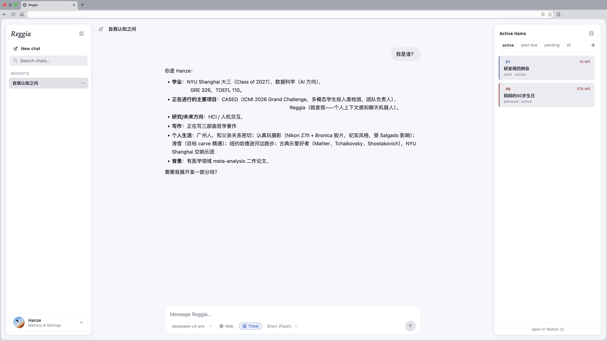

Case Study · 2026.05 – 至今
让 context 成为用户拥有的系统。一个由人策展长期背景、维护当前事项，再由 Agent 按需读取的个人 AI 入口。FastAPI + 原生 JavaScript + SQLite，独立完成产品定义与开发编排。
Problem
通用聊天产品常从对话里猜测什么值得记住，却把稳定背景、当前任务和偶然一句话混在同一层。Reggia 把长期背景与短期状态拆开，并把收录、修改与删除的决定留给用户。Agent 不拥有记忆；它只在获得许可时读取 context。

Definition
长期记忆按工作、研究、思想与个人四个域组织；短期记忆则是一组带状态、优先级与敏感度的进行事项。两者都采用轻量索引到详情的两级读取：先用低成本目录判断相关性，再只取回答真正需要的内容。结构化 context 不是越多越好，而是让读取路径可以被解释。
# Long-term and short-term memory use the same L1 → L2 discipline.
Long-term memory: reggia_longterm_index (L1) + reggia_longterm_read (L2).
Short-term memory: reggia_items_list (L1) + reggia_item_detail (L2).
Available tools: {tool_list}. Always prefer L1 over L2.
# L1 is a cheap table of contents; L2 reads the full Markdown page.
"CHEAP — ~100 tokens. Always call this BEFORE reggia_longterm_read"
"EXPENSIVE — 5–30K tokens. Only call this AFTER consulting the index"真实实现节选。先判断“读哪里”，再决定“读多少”，避免把全部个人资料塞进每一轮 prompt。
ReAct Loop
Reggia 的 Agent 是一个最多八轮的轻量 ReAct 循环：模型推理，选择工具，读取观察结果，再决定继续或回答。它没有额外编排框架；状态转移直接表现为 SSE 事件，因此前端可以区分 reasoning、action、observation 与 final，而不是只显示一个旋转图标。
while tool_round < MAX_TOOL_ROUNDS:
tool_round += 1
yield _sse("react_step", {"phase": "reason", "round": tool_round})
body = {"model": model, "messages": messages, "stream": True}
if tools:
body["tools"] = tools
body["tool_choice"] = "auto"
# After streamed tool calls are assembled and executed:
yield _sse("react_step", {"phase": "observation", "round": tool_round,
"tool": name, "ok": ok})
messages.append({"role": "tool", "tool_call_id": tc["id"],
"content": result})真实实现节选。模型的“思考—行动—观察”不是概念图，而是可以被界面消费的事件协议。
Tool Calling
模型只能调用显式注册的读取工具，并由执行器映射到确定的本地能力。工具调用参数在流中被逐段组装，执行结果作为 observation 回到下一轮；前端同时把内部名称翻译成“长期记忆”“当前事项”等用户可理解的读取提示。
TOOL_EXECUTORS = {
"reggia_index": _exec_reggia_index,
"reggia_longterm_index": _exec_reggia_longterm_index,
"reggia_longterm_read": _exec_reggia_longterm_read,
"reggia_items_list": _exec_reggia_items_list,
"reggia_item_detail": _exec_reggia_item_detail,
"web_search": _exec_web_search,
}
executor = TOOL_EXECUTORS.get(name)
if executor:
result = await executor(**args)
else:
result = json.dumps({"error": f"unknown tool: {name}"})真实实现节选。可调用能力由白名单注册表定义，未知工具不会穿透到系统内部。
Streaming
后端把每个 Agent 事件编码为标准 SSE，边产生边转发；同时累积最终文本、工具元数据与 token 使用量。流结束后才把完整 assistant message 持久化到会话历史，使用户看到的响应过程与下次对话读取的记录保持一致。
async for sse_line in agent_loop.run(history, prompt, model, ...):
msg = json.loads(sse_line[6:]) # strip "data: "
if msg.get("type") == "text_delta":
full_response.append(msg.get("text", ""))
elif msg.get("type") == "tool_call":
tool_calls_meta.append({"tool": msg.get("name", "")})
yield sse_line
full_text = "".join(full_response)
db.append_message(session_id, "assistant", full_text,
tool_calls=json.dumps(tool_calls_meta))
return StreamingResponse(event_stream(), media_type="text/event-stream")真实实现节选。SSE 既承担即时反馈，也形成一条可被会话层审计与持久化的事件路径。
Outcome
会话与消息、当前事项、长期页面分别落在本地 SQLite 中；长期内容当前与外部知识页面同步并保留冲突状态。Reggia 已成为我自己的日常 AI 入口，验证了一个更克制的假设：准确性不只来自更强的模型，也来自用户能维护、检查并撤回的 context。
查看 GitHub 仓库 →def append_message(session_id, role, content, ..., tool_calls=None):
cur = conn.execute(
"""INSERT INTO messages
(session_id, role, content, created_at, ..., tool_calls)
VALUES (?, ?, ?, ?, ?, ?, ?, ?)""",
(session_id, role, content, now, ..., tool_calls),
)
conn.execute("UPDATE sessions SET updated_at = ? WHERE id = ?",
(now, session_id))
conn.commit()CREATE TABLE IF NOT EXISTS long_term_memory (
domain TEXT PRIMARY KEY,
notion_page_id TEXT NOT NULL UNIQUE,
title TEXT,
content_md TEXT NOT NULL DEFAULT '',
notion_pending_md TEXT,
notion_last_edited TEXT,
local_modified_at TEXT,
synced_at TEXT,
sync_state TEXT NOT NULL DEFAULT 'clean'
);真实实现节选，非关键参数以省略号标记。短期会话保存完整消息与工具调用；长期内容独立存储，并显式记录本地修改、远端版本与同步冲突。
Retrospective
主动维护 context 的摩擦比预期更高：“写下什么重要”对多数人仍是高门槛动作。下一版会加入策展引导——Agent 可以提问、归纳并提出修改建议，但不能静默写入。控制权的归属不变，上手的路径可以更缓。
← 返回全部作品